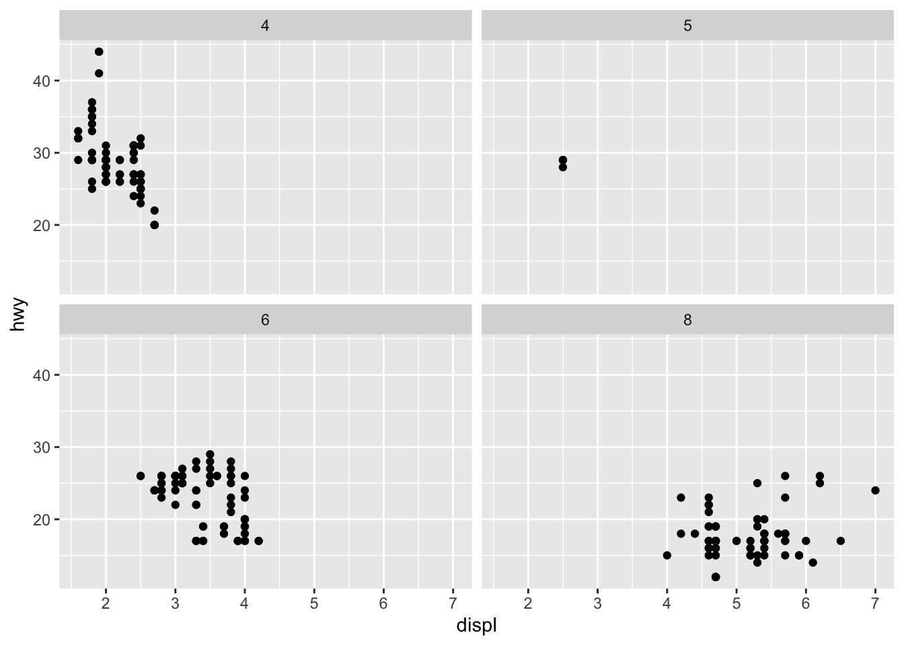
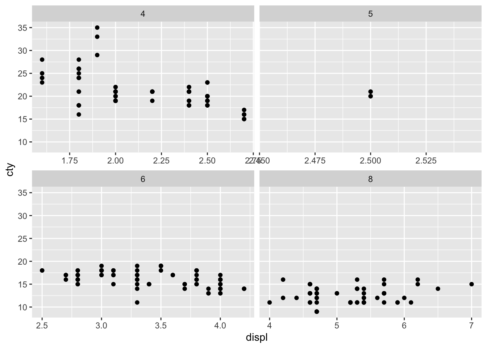

# install.packages("ggplot2")01-building_graphs_layer_by_layer
Required packages
For this tutorial, we need these packages (run the following to install them if you don’t have them already):
In this tutorial, we will mostly use one data set that is bundled with ggplot2: mpg. It includes information about the fuel economy of popular car models in 1999 and 2008, collected by the US Environmental Protection Agency.
library(tidyverse)── Attaching core tidyverse packages ──────────────────────── tidyverse 2.0.0 ──
✔ dplyr 1.1.4 ✔ readr 2.1.5
✔ forcats 1.0.0 ✔ stringr 1.5.1
✔ ggplot2 4.0.0 ✔ tibble 3.3.0
✔ lubridate 1.9.4 ✔ tidyr 1.3.1
✔ purrr 1.1.0
── Conflicts ────────────────────────────────────────── tidyverse_conflicts() ──
✖ dplyr::filter() masks stats::filter()
✖ dplyr::lag() masks stats::lag()
ℹ Use the conflicted package (<http://conflicted.r-lib.org/>) to force all conflicts to become errorslibrary(dplyr)
mpg# A tibble: 234 × 11
manufacturer model displ year cyl trans drv cty hwy fl class
<chr> <chr> <dbl> <int> <int> <chr> <chr> <int> <int> <chr> <chr>
1 audi a4 1.8 1999 4 auto… f 18 29 p comp…
2 audi a4 1.8 1999 4 manu… f 21 29 p comp…
3 audi a4 2 2008 4 manu… f 20 31 p comp…
4 audi a4 2 2008 4 auto… f 21 30 p comp…
5 audi a4 2.8 1999 6 auto… f 16 26 p comp…
6 audi a4 2.8 1999 6 manu… f 18 26 p comp…
7 audi a4 3.1 2008 6 auto… f 18 27 p comp…
8 audi a4 quattro 1.8 1999 4 manu… 4 18 26 p comp…
9 audi a4 quattro 1.8 1999 4 auto… 4 16 25 p comp…
10 audi a4 quattro 2 2008 4 manu… 4 20 28 p comp…
# ℹ 224 more rows
The variables are mostly self-explanatory:
ctyandhwyrecord miles per gallon (mpg) for city and highway driving.displis the engine displacement in litres.drvis the drivetrain: front wheel (f), rear wheel (r) or four wheel (4).modelis the model of car. There are 38 models, selected because they had a new edition every year between 1999 and 2008.classis a categorical variable describing the “type” of car: two seater, SUV, compact, etc.
Every ggplot starts with the object creation, via the ggplot() function:
ggplot()
As you can see, this generates just an empty frame. Even if we add some data, there are still nothing connecting it to any visual feature:
ggplot(mpg)
We can add some mappings. For instance, if we are interested in the relationship between miles per gallon in highway driving (hwy) vs. the engine displacement (displ), we would assign those attributes to y and x positions respectively using the aes() function:
ggplot(mpg, aes(x=displ, y=hwy))
Now, because there is data and mappings to x and y positions, ggplot2 applies some sensible defaults, and automatically adds Cartesian coordinates as well as linear continuous scales that nicely fit to the range of our data (you can check this with e.g. range(mpg$hwy)).
What is missing here? Of course, the most important bit, which is the visual mark we are going to use to actually represent each observation. In this case, let us use simple points:
ggplot(mpg, aes(displ, hwy)) +
geom_point()
Even if there is always the temptation to put everything together in a single line, it is a good practice to separate every function and layer in each own line for readability reasons.
Also note that position channels x and y are so important that you do not need to name them (i.e. x=displ, y=hwy), but just remember that x comes first. Other channels like color, fill, shape, alpha, size… must be always named.
It is common practice to add data and mapping to the very function that creates the chart object (see ?ggplot), and in this way they apply as defaults to every single layer we add. It is also possible to delay the mapping and still act as a default as follows:
ggplot(mpg) +
aes(displ, hwy) +
geom_point()
The below might be maybe more readable, especially when the mapping is complex, but the result is the same.
ggplot() +
geom_point(aes(displ, hwy), mpg)It is generally best to add a default dataset and mapping to avoid duplicated code across layers… or missing ones. For instance, where are the lines here?
ggplot() +
geom_point(aes(displ, hwy), mpg) +
geom_line()
Obviously, there are no lines because they do not have any mapping. If data and mapping are set as defaults, then we have both elements:
ggplot(mpg) +
aes(displ, hwy) +
geom_point() +
geom_line()Exercises
1. How would you describe the relationship between cty and hwy? Do you have any concerns about drawing conclusions from that plot?
ggplot(mpg) +
aes(cty, hwy) +
geom_point() +
geom_line()Linear. As cty increases, hwy increases as well. Numbers are discrete.
2. What does ggplot(mpg, aes(model, manufacturer)) + geom_point() show? Is it useful? How could you modify the data to make it more informative?
ggplot(mpg, aes(model, manufacturer)) + geom_point()These are two categorical values. A data plot is not the best option. Also a model relates to a single manufacturer.
A bar chart would be a better option. Count of models per manufacturer.
3. Describe the data, aesthetic mappings and layers used for each of the following plots.
.
Scatter plots
ggplot(mpg, aes(cty, hwy)) +
geom_point()
scatterplot of two discrete variables
ggplot(diamonds, aes(carat, price)) +
geom_point()
scatterplot of two discrete variables
Line series
ggplot(economics, aes(date, unemploy)) +
geom_line()
line series of two discrete variables.
Side note: date values are expressed by the number of days that has passed from January 1st, 1970.
economics |>
dplyr::filter(date >= as.Date("1970-01-01"),
date < as.Date("1970-05-01")) |>
ggplot() +
aes(date, unemploy) +
geom_line()With the dates, if you decrease the time, the axis will scale as such.
Histogram
ggplot(mpg, aes(cty)) +
geom_histogram()`stat_bin()` using `bins = 30`. Pick better value `binwidth`.Aesthetics
To add additional variables to a plot, we can map them into other channels such as color, shape, or size. See aesthetic documentation here.
For instance, let’s represent the car class as the color of the dots:
ggplot(mpg) +
aes(displ, hwy, color=class) +
geom_point()
Based on the previous plot, we can see that the group of cars with unusually high fuel economy for their engine size are two seaters: cars with big engines, but lightweight bodies.
Once again, we can observe how ggplot2 applies some more sensible defaults:
It detects that
classis a categorical variable, a factor, and applies a default color scale based on hue.At the same time, the scale is responsible for creating a guide, in this case a legend that shows the class levels along with their associated mapping.
Sometimes it is also useful to split up some aesthetics that may apply only to certain layers. For example, in this case:
ggplot(mpg) +
aes(displ, hwy) +
geom_line() +
geom_point(aes(color=class))Here, position aesthetics apply to all layers, and color is specific to the layer of points.
Every single aesthetic, every single channel, can be set to a fixed value. For instance, if we do not apply any mapping to color, we have previously seen that ggplot2 just draws black dots by default. But of course, this can be changed:
ggplot(mpg) +
aes(displ, hwy) +
geom_point(color="blue")
Exercises
1. Compare the following two plots and reason why you get this result:
ggplot(mpg, aes(displ, hwy)) + geom_point(aes(colour = "blue"))
ggplot(mpg, aes(displ, hwy)) + geom_point(colour = "blue")
2. Experiment with the color, shape and size aesthetics. What happens when you map them to continuous values?
ggplot(mpg) +
aes(displ, hwy) +
geom_point(color="red", shape ="square")What about categorical values? What happens when you use more than one aesthetic in a plot?
ggplot(mpg, aes(cty)) +
geom_histogram(color = "red", fill = "red")`stat_bin()` using `bins = 30`. Pick better value `binwidth`.ggplot(mpg) +
aes(displ, hwy) +
geom_line() +
geom_point(aes(color=displ, shape = class))Warning: The shape palette can deal with a maximum of 6 discrete values because more
than 6 becomes difficult to discriminate
ℹ you have requested 7 values. Consider specifying shapes manually if you need
that many of them.Warning: Removed 62 rows containing missing values or values outside the scale range
(`geom_point()`).Faceting
Useful for mapping categorical values when there are too many categories and no way to further aggregate the data.
Take for instance the previous class example, with 7 different categories. A solution here is to trade color for position: faceting splits the data in as many subsets as categories in the mapped variable. The only difference with other mappings is that it cannot be applied as an aes(), but directly into the dedicated faceting function, and as a formula, preceded by a ~:
ggplot(mpg) +
aes(displ, hwy) +
facet_wrap(~class) +
geom_point()
Exercises
1. What happens if you try to facet by a continuous variable like hwy? What about cyl? What’s the key difference?
ggplot(mpg) +
aes(displ, hwy) +
facet_wrap(~hwy) +
geom_point()
ggplot(mpg) +
aes(displ, hwy) +
facet_wrap(~cyl) +
geom_point()
2. Use faceting to explore the 3-way relationship between fuel economy, engine size, and number of cylinders. How does faceting by number of cylinders change your assessment of the relationship between engine size and fuel economy?
ggplot(mpg) +
aes(displ, cty) +
facet_wrap(~cyl) +
geom_point()Cars with less cylinders have a better fuel economy in the city.
3. Read the documentation for facet_wrap(). What arguments can you use to control how many rows and columns appear in the output?
facet_wrap(
facets,
nrow = NULL,
ncol = NULL)4. What does the scales argument to facet_wrap() do? When might you use it?
Should scales be fixed ("fixed", the default), free ("free"), or free in one dimension ("free_x", "free_y")?
ggplot(mpg) +
aes(displ, cty) +
facet_wrap(~cyl, scales="free_x") +
geom_point()
ggplot(mpg) +
aes(displ, cty) +
facet_wrap(~cyl, scales="free_y") +
geom_point()Free X and Free Y allows the scales to do their own thing rather than be the same for every facet.
Output
As with any other R object, we can save a ggplot in a variable and print it later:
p <- ggplot(mpg) +
aes(displ, hwy) +
geom_point()
print(p)
p # print is implicit
We can even build it step by step:
p <- ggplot(mpg)
p
p <- p + aes(displ, hwy)
p
p <- p + geom_point()
p
Or using different variables:
p_base <- ggplot(mpg)
p_aes <- aes(displ, hwy)
p_dot <- geom_point()
p_base + p_aes + p_dot
This is convenient for interactive usage or reports as this one. But at other times we might want to produce a graph in a script and save it somewhere else as a standalone image or PDF. This is achieved with the ggsave() function:
ggsave("plot.png", p, width = 5, height = 5)Exercises
1. Read the documentation for ggsave(). What happens if you do not specify the plot argument?
It defaults to the last plot displayed.
2. How can you save the plot as a PDF file?
Set device to pdf
3. How can you modify the proportions of the plot?
adjust the width and height
4. What happens if you change the resolution for a PNG output? And a SVG?
It will be more or less granulated for a png. SVG will not change resolution since it is a vector graphic.